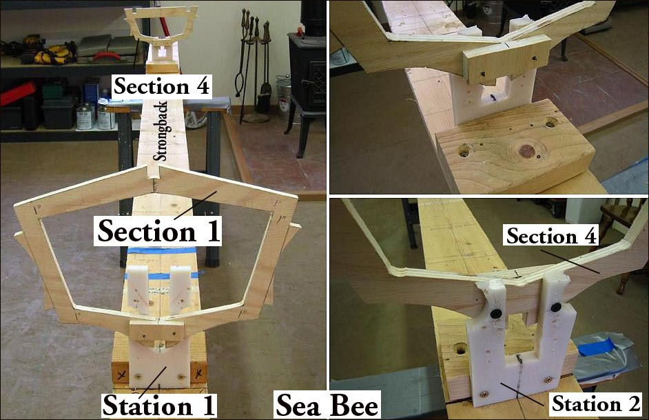

| Strongback | Menu Previous Page Next Page |
|

The "Folding Kayak Builders Manual" contains detailed instructions for building a strongback and strongback stations and for attaching cross sections to the stations on the strongback. Use the {Back} key to return.
The strongback and strongback stations are the same whether the boat is a wood frame SOF or an aluminum / HDPE frame folding kayak. The stations presented are made from HDPE (plastic), but they can just as easily be constructed of plywood or solid softwood such as pine or redwood. On an 8 cross section kayak like the Sea Rider (see next page) , only the first and last cross sections (1 and 8) are attached. On a 4 section kayak like the Sea Bee, only sections 1 and 4 are attached. The wood frame kayak's constructed in this manual are attached to the strongback with the deck up. |
|